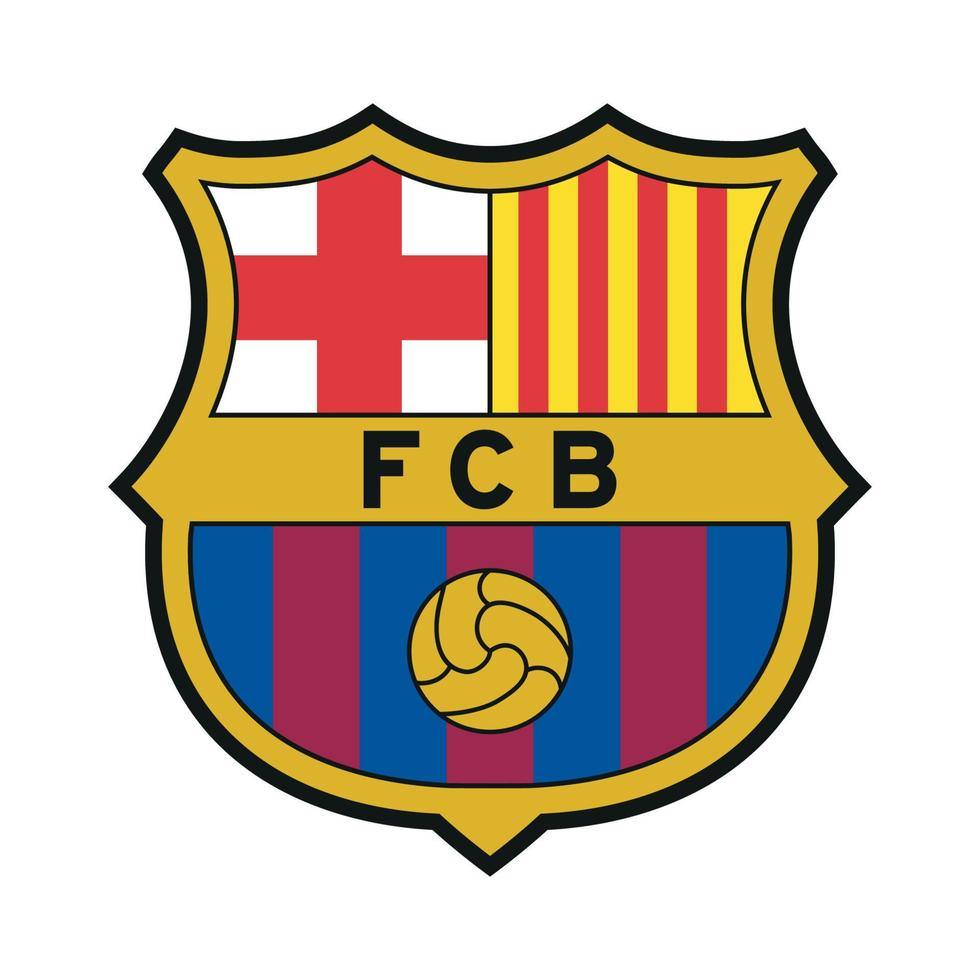
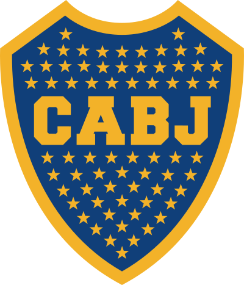
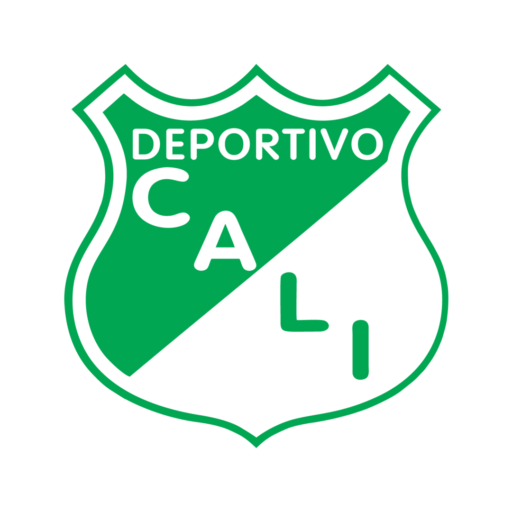

México
-

Chivas
Dato curioso: Solo jugadores mexicanos.
Total campeonatos: 12
-

América
Dato curioso: Más títulos en México.
Total campeonatos: 13
-

Cruz Azul
Dato curioso: Apodados "La Máquina".
Total campeonatos: 9
-

Pumas
Dato curioso: Cantera de Hugo Sánchez.
Total campeonatos: 7
España
-

Real Madrid
Dato curioso: Más títulos de Champions League.
Total campeonatos: 35
-

Barcelona
Dato curioso: "Més que un club".
Total campeonatos: 26
-
Atlético de Madrid
Dato curioso: Famosos por su garra.
Total campeonatos: 11
-
Sevilla
Dato curioso: Especialista en UEFA Europa League.
Total campeonatos: 6
Argentina
-

River Plate
Dato curioso: Máximo campeón de Argentina.
Total campeonatos: 37
-

Boca Juniors
Dato curioso: Más Libertadores de Argentina.
Total campeonatos: 34
-
Racing Club
Dato curioso: Apodados "La Academia".
Total campeonatos: 18
-

Newell's Old Boys
Dato curioso: Formador de Messi.
Total campeonatos: 6
Inglaterra
-

Manchester United
Dato curioso: Más títulos en Inglaterra.
Total campeonatos: 20
-

Manchester City
Dato curioso: Dominante en la última década.
Total campeonatos: 9
-

Chelsea
Dato curioso: Campeón reciente de Champions.
Total campeonatos: 6
-

Arsenal
Dato curioso: Invictos en 2004.
Total campeonatos: 13
Colombia
-
Atlético Nacional
Dato curioso: Más títulos en Colombia.
Total campeonatos: 16
-

Deportivo Cali
Dato curioso: Uno de los históricos en Colombia.
Total campeonatos: 9
-
Millonarios
Dato curioso: Club histórico colombiano.
Total campeonatos: 15